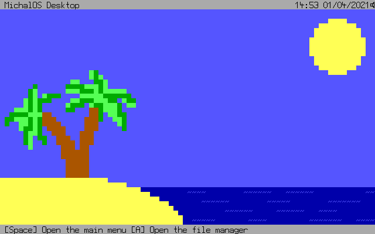

A simple 16-bit operating system
MichalOS is a simple keyboard controlled operating system based on MikeOS 4.5, aimed to be more advanced and lightweight on the inside, but simple and easy to use on the outside. It was designed with speed and productivity in mind. Give your 80s 386 PC life once again with MichalOS!
It should also work on modern computers as well, just make sure it has a legacy BIOS option.
MichalOS is a 16-bit real mode operating system written in x86 assembly language. It includes many programs and lots of content, while still being small enough to fit on a floppy disk.
MichalOS is licenced under the BSD 3-Clause license, which means that its source code is fully available and you are free to modify it to your heart's content. If you wish to contribute to the project or just want to submit your ideas, please visit our GitHub repo.

For more screenshots, please visit the gallery.